# Load packages
library(terra)
library(sf)
library(tidyverse)
library(exactextractr)
library(AHPtools)
library(ggplot2)
library(scales)
library(dplyr)
library(classInt)
library(bcmaps)
library(stringr)
library(readxl)
library(topsis)About This Project
As electricity demand grows across British Columbia, more renewable energy installations need to be developed to support a resilient, diversified, low-carbon future. In light of this challenge, a site suitability analysis was undergone to create a province-wide screening tool that determines the most optimal locations for solar PV development.
This analysis is broken down into 3 main sections:
Stage 1: Determine the geographical potential of BC - the total land area where solar farm development is possible.
Stage 2: Determine the technical potential of BC - the total energy these sites could produce on a yearly basis.
Stage 3: Rank suitable sites within top regional district using TOPSIS.
By providing clear and accessible information on renewable energy potential, this project helps accelerate clean energy development, informs decision-making and supports BC’s transformation to a more resilient and sustainable electricity system.
This document provides a detailed guide of the analysis, including all code used to derive results.
Click for first-draft publication
NOTE: You will need to change each file path to a folder on your computer!
Set-Up
First, each package must be installed and loaded to complete this analysis
Stage 1: Geographical Potential
Step 1: Data Pre-Processing
1.1 Create Template
To first step of the analysis is the creation of a template raster. Using this layer in all subsequent processing will ensure that every derived surface conforms to the exact same extent and resolution. The template is created by rasterizing a polygon representing BCs administrative boundary.
# Create template
# Read in layer
bc <- sf::st_read("~/Library/CloudStorage/OneDrive-UBC/RA/Data/Admin Boundaries/BC_RegionalDistricts.shp")
# Project to BC Enviro Albers (EPSG:3005)
bc <- sf::st_transform(bc, crs = 3005)
# Create template spanning vector extent
# Set 30 m spatial resolution (each cell = 30m x 30m)
template <- rast(bc, res = 30)
# Convert to raster and burning in the Regional District Name attribute column
template <- rasterize(bc, template, field = "NAME_2")
# Save the output
writeRaster(template, "~/Library/CloudStorage/OneDrive-UBC/RA/SolarModel_Guide/data/template/template.tif", overwrite = TRUE)
# Quick read
template <- rast("~/Library/CloudStorage/OneDrive-UBC/RA/SolarModel_Guide/data/template/template.tif")The next step of the analysis is data pre-processing. This section is divided in 2 parts - suitability criteria and land constraints.
1.2 Suitability Criteria Processing
There are 6 suitability criteria layers used in this analysis:
Global Tilted Irradiance (GTI)
Ground Slope
Ground Aspect
Proximity to Substations
Proximity to Demand Centers
Proximity to Major Roads
Each layer needs to be clipped to BC’s bounding box, masked to a template raster, projected to a common CRS (EPSG:3005 - BC Environmental Albers), sampled to a consistent spatial resolution, and reclassified to a 1-5 suitability scale. We will process each layer individually to ease computational power.
1.2.1 Global Tilted Irradiance
Data source: Global Solar Atlas GIS Data
Clean data:
# Read in GTI raster layer
GTI <- rast("/Users/kenziethomson/Library/CloudStorage/OneDrive-UBC/RA/Data/Existing Renewables Mapping Project/Raw solar and wind/Canada_GISdata_LTAy_YearlyMonthlyTotals_GlobalSolarAtlas-v2_GEOTIFF/GTI.tif")
# Project to template raster projection (EPSG:3005)
# Resampling method = bilinear interpolation (used for continuous data)
gti_proj <- project(GTI, template, method = "bilinear")
# Clip to BC bounding box
gti_crop <- crop(gti_proj, template)
# Mask to BC administrative boundary
gti_mask <- mask(gti_crop, template)
# Save in cleaned data folder
writeRaster(gti_mask, "/Users/kenziethomson/Library/CloudStorage/OneDrive-UBC/RA/SolarModel_Guide/data/criteria/cleaned/gti_cleaned.tif", overwrite = TRUE)Reclassify to 1-5 suitability scale:
# Reclassify using natural breaks (jenks)
# Get data bounds
true_min <- global(gti_mask, "min", na.rm = TRUE)[1, 1]
true_max <- global(gti_mask, "max", na.rm = TRUE)[1, 1]
set.seed(123)
vals <- terra::spatSample(gti_mask, 500000, method = "regular", na.rm = TRUE)
jenks_obj <- classIntervals(as.numeric(vals[[1]]), n = 5, style = "fisher")
breaks <- jenks_obj$brks
# Set data bounds
breaks[1] <- true_min
breaks[length(breaks)] <- true_max
# Create classification matrix
m_jenks <- matrix(c(
head(breaks, -1),
tail(breaks, -1),
1:5
), ncol = 3)
# Execute classification
gti_reclass <- terra::classify(gti_mask, m_jenks, include.lowest = TRUE)
# Save in reclassified data folder
writeRaster(gti_reclass, "/Users/kenziethomson/Library/CloudStorage/OneDrive-UBC/RA/SolarModel_Guide/data/criteria/reclassified/gti_reclassified.tif", overwrite = TRUE)
1.2.2 Ground Slope
Data source: bcmaps R Package
The ground slope raster is created by piecing together a DEM from the bcmaps package and then utilizing terrain functions to calculate slope. Initiate this for-loop to download the DEM, create the slope raster, and mask to our template raster. Expect this code chunk to take a few hours to finish.
# Check available layers in bcmaps package
bc_maps_avail <- available_layers()
# Download DEM by ecoregion, check layer names
ecoprov <- ecoprovinces()
# Set output directory
out_dir <- "Users/kenziethomson/Library/CloudStorage/OneDrive-UBC/RA/SolarModel_Guide/data/criteria/slope"
# Define ecoprovinces to process in a list
ecoprovs <- c(
"SAL", "NBM", "TAP", "BOP", "SBI",
"SIM", "SOI", "COM", "GED", "NEP", "CEI"
)
# Call template raster mask template
template <- rast("/Users/kenziethomson/Library/CloudStorage/OneDrive-UBC/RA/SolarModel_Guide/data/template/template.tif")
# Initiate for-loop to create slope raster from DEM chunks
for (prov in ecoprovs) {
message("Processing ", prov)
# Get ecoprov boundary
bound_sf <- ecoprovinces() %>%
filter(ECOPROVINCE_CODE == prov)
# Convert to SpatVector and project to BC Albers (EPSG:3005)
bound_vect <- vect(bound_sf)
bound_vect <- project(bound_vect, "EPSG:3005")
# BUFFER: Create a 500m buffer around the boundary to pull neighboring DEM data
bound_buffered <- buffer(bound_vect, width = 500)
# Get DEM using the buffered boundary
dem <- cded_raster(sf::st_as_sf(bound_buffered))
# Project DEM to template grid
dem_3005 <- project(
rast(dem),
template,
method = "bilinear")
# Calculate slope on the buffered DEM first to ensure seamless edges
slope <- terrain(
dem_3005,
v = "slope",
neighbors = 8,
unit = "degrees")
# Crop and mask to the strict, original ecoprovince boundary
slope_clipped <- crop(slope, bound_vect)
slope_clipped <- mask(slope_clipped, bound_vect)
# Write slope raster
writeRaster(slope_clipped, file.path(out_dir, paste0(prov, "_slope.tif")), overwrite = TRUE)
# Clean memory
rm(dem, dem_3005, slope, slope_clipped, bound_vect, bound_buffered)
gc()
}
# Now join all individual ecoprovince slope rasters together
# List and load slope rasters
slope_files <- list.files(path = out_dir, pattern = "_slope\\.tif$", full.names = TRUE)
slope_list <- lapply(slope_files, rast)
# Merge all slopes into BC-wide raster
bc_slope <- do.call(merge, slope_list)
# Force exact match to template extent, then mask
bc_slope_aligned <- crop(bc_slope, template)
bc_slope_final <- mask(bc_slope_aligned, template)
# Save in cleaned data folder
writeRaster(bc_slope_final, "/Users/kenziethomson/Library/CloudStorage/OneDrive-UBC/RA/SolarModel_Guide/data/criteria/cleaned/bc_slope_cleaned.tif")Reclassify to a 1-5 suitability scale:
# Reclassify using a defined matrix
# Create classes using format (from, to, new)
m <- c(0, 5, 5, #best
5, 10, 4,
10, 15, 3,
15, 20, 2,
20, 100, 1) #worst
# Create matrix
slope_matrix <- matrix(m, ncol = 3, byrow = TRUE)
# Apply reclassification
slope_reclass <- terra::classify(bc_slope_final, slope_matrix, include.lowest = TRUE, right = FALSE)
# Save in reclassified data folder
writeRaster(slope_reclass, "/Users/kenziethomson/Library/CloudStorage/OneDrive-UBC/RA/SolarModel_Guide/data/criteria/reclassified/slope_reclassified.tif", overwrite = TRUE)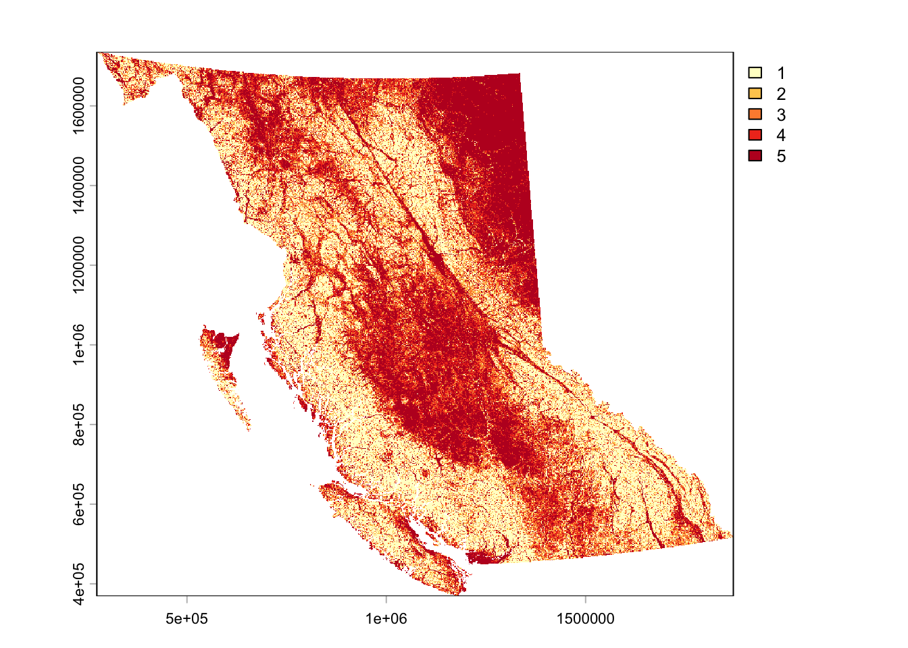
1.2.3 Ground Aspect
Data source: bcmaps R Package
We will apply the same for-loop methodology to create a BC wide aspect layer from a DEM. Again, expect this code chunk to take a few hours to finish.
# Check available layers in bcmaps package
bc_maps_avail <- available_layers()
# Download DEM by ecoregion, check layer names
ecoprov <- ecoprovinces()
# Set output directory
out_dir <- "/Users/kenziethomson/Library/CloudStorage/OneDrive-UBC/RA/SolarModel_Guide/data/criteria/aspect"
# Define ecoprovinces to process in a list
ecoprovs <- c(
"SAL", "NBM", "TAP", "BOP", "SBI",
"SIM", "SOI", "COM", "GED", "NEP", "CEI"
)
# Call template raster mask template
template <- rast("~/Library/CloudStorage/OneDrive-UBC/RA/SolarModel_Guide/data/template/template.tif")
# Initiate loop
for (prov in ecoprovs) {
message("Processing ", prov)
# Get ecoprov boundary
bound_sf <- ecoprovinces() %>%
filter(ECOPROVINCE_CODE == prov)
bound_vect <- vect(bound_sf)
bound_vect <- project(bound_vect, "EPSG:3005")
# BUFFER: Create a 500m buffer to pull overlapping DEM data
bound_buffered <- buffer(bound_vect, width = 500)
# Get DEM using the buffered boundary
dem <- cded_raster(sf::st_as_sf(bound_buffered))
# Project DEM to template
dem_3005 <- project(
rast(dem),
template,
method = "bilinear")
# Calculate aspect on the buffered DEM
aspect <- terrain(
dem_3005,
v = "aspect",
neighbors = 8,
unit = "degrees")
# Crop and mask strictly to the original ecoprovince boundary
aspect_clipped <- crop(aspect, bound_vect)
aspect_clipped <- mask(aspect_clipped, bound_vect)
# Write aspect raster
writeRaster(
aspect_clipped,
file.path(out_dir, paste0(prov, "_aspect.tif")),
overwrite = TRUE)
# Clean memory
rm(dem, dem_3005, aspect, aspect_clipped, bound_vect, bound_buffered)
gc()
}
# Now join all individual ecoprovince aspect rasters together
# List all aspect rasters
aspect_files <- list.files(
path = out_dir,
pattern = "_aspect\\.tif$",
full.names = TRUE)
# Load rasters into a list
aspect_list <- lapply(aspect_files, rast)
# Merge into one surface
bc_aspect <- do.call(merge, aspect_list)
# Crop and mask to template
bc_aspect_aligned <- crop(bc_aspect, template)
bc_aspect_final <- mask(bc_aspect_aligned, template)
# Save in cleaned data folder
writeRaster(bc_aspect_final, "/Users/kenziethomson/Library/CloudStorage/OneDrive-UBC/RA/SolarModel_Guide/data/criteria/cleaned/bc_aspect_cleaned.tif", overwrite = TRUE)Reclassify to a 1-5 suitability scale:
# Reclassify using a defined matrix
# Create classes using format (from, to, new)
m <- c(315, 360, 1, #N
0, 45, 1, #N (wrap-around)
45, 135, 3, #E
135, 225, 5, #S
225, 315, 3) #W
# Create matrix
aspect_matrix <- matrix(m, ncol = 3, byrow = TRUE)
# Apply classification
aspect_reclass <- terra::classify(bc_aspect_final, aspect_matrix, include.lowest = TRUE, right = TRUE)
# Save in reclassified data folder
writeRaster(aspect_reclass, "/Users/kenziethomson/Library/CloudStorage/OneDrive-UBC/RA/SolarModel_Guide/data/criteria/reclassified/aspect_reclassified.tif", overwrite = TRUE)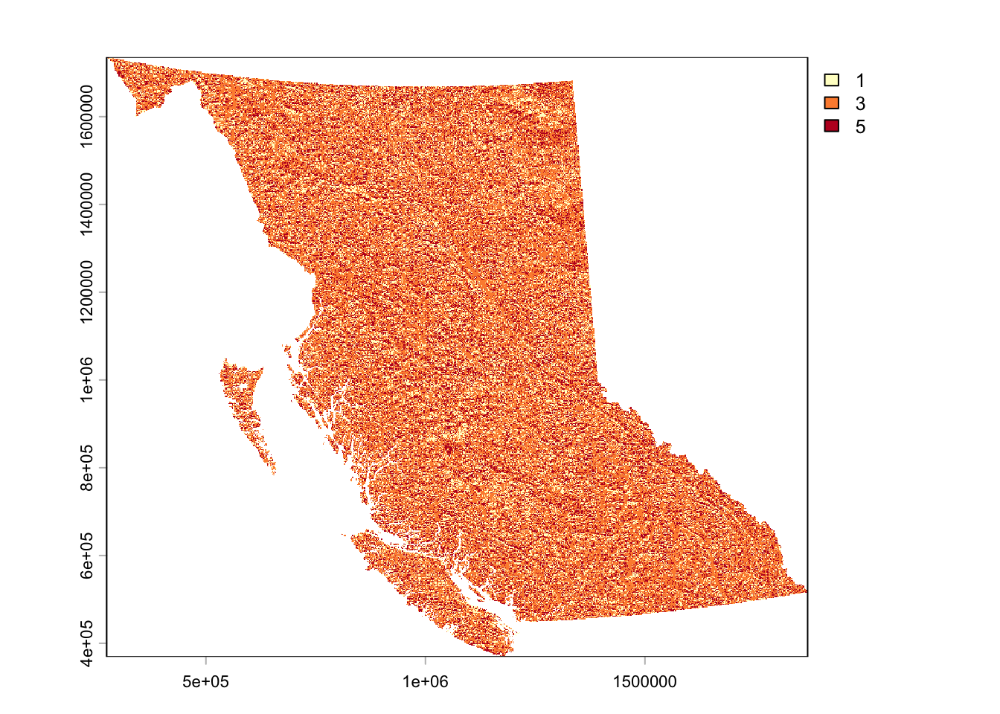
1.2.4 Proximity to Substations
Data source: Private
Substation locations are point data, therefor, we must first create a euclidean distance raster where each cell represents a distance in meters away from the closest substation.
# Load in vector layer
subs <- sf::st_read("/Users/kenziethomson/Library/CloudStorage/OneDrive-UBC/RA/Data/Criteria/Raw/Substations/substations.shp")
# Transform to spatvect for processing
subs_v <- vect(subs)
# Create Euclidean distance raster showing proximity to substations that spatially conforms to our template
subs_dist <- terra::distance(template, subs_v, rasterize = TRUE)
# Mask to template boundary
subs_mask <- mask(subs_dist, template)
# Save in cleaned data folder
writeRaster(subs_mask, "/Users/kenziethomson/Library/CloudStorage/OneDrive-UBC/RA/SolarModel_Guide/data/criteria/cleaned/subs_cleaned.tif", overwrite = TRUE)Reclassify to a 1-5 suitability scale:
# Reclassify using a defined matrix
# Units = meters because our crs = projected to BC Albers
m <- c(0, 1000, 5, # 1km surrounding substations is best
1000, 2000, 4,
2000, 5000, 3,
5000, 7500, 2,
7500, Inf, 1) # Anything beyond 7.5km is worst
# Create matrix
subs_m <- matrix(m, ncol = 3, byrow = TRUE)
# Apply classification
subs_reclass <- terra::classify(subs_mask, subs_m, include.lowest = TRUE, right = FALSE)
# Save in reclassified data folder
writeRaster(subs_reclass, "/Users/kenziethomson/Library/CloudStorage/OneDrive-UBC/RA/SolarModel_Guide/data/criteria/reclassified/subs_reclassified.tif", overwrite = TRUE)
1.2.5 Proximity to Demand Centers
Data source: BC Data Catalogue
Repeat process using point locations of major cities.
# Load in vector layer
cities <- sf::st_read("/Users/kenziethomson/Library/CloudStorage/OneDrive-UBC/RA/Data/Criteria/Raw/DBM_BC_7H_MIL_POPULATION_POINT/DBMBC7HML4_point.shp")
# Transform to spatvect for processing
cities_v <- vect(cities)
# Create Euclidean distance raster showing proximity to substations that spatially conforms to our template
cities_dist <- terra::distance(template, cities_v, rasterize = TRUE)
# Mask to template boundary
cities_mask <- mask(cities_dist, template)
# Save in cleaned data folder
writeRaster(cities_mask, "/Users/kenziethomson/Library/CloudStorage/OneDrive-UBC/RA/SolarModel_Guide/data/criteria/cleaned/cities_cleaned.tif", overwrite = TRUE)Reclassify to a 1-5 suitability scale:
# Reclassify using a defined matrix
# Units = meters because our crs = projected to BC Albers
m <- c(0, 5000, 5,
5000, 15000, 4,
15000, 30000, 3,
30000, 45000, 2,
45000, Inf, 1)
# Create matrix
cities_m <- matrix(m, ncol = 3, byrow = TRUE)
# Apply classification
cities_reclass <- terra::classify(cities_mask, cities_m, include.lowest = TRUE, right = FALSE)
# Save in reclassified data folder
writeRaster(cities_reclass, "/Users/kenziethomson/Library/CloudStorage/OneDrive-UBC/RA/SolarModel_Guide/data/criteria/reclassified/cities_reclassified.tif", overwrite = TRUE)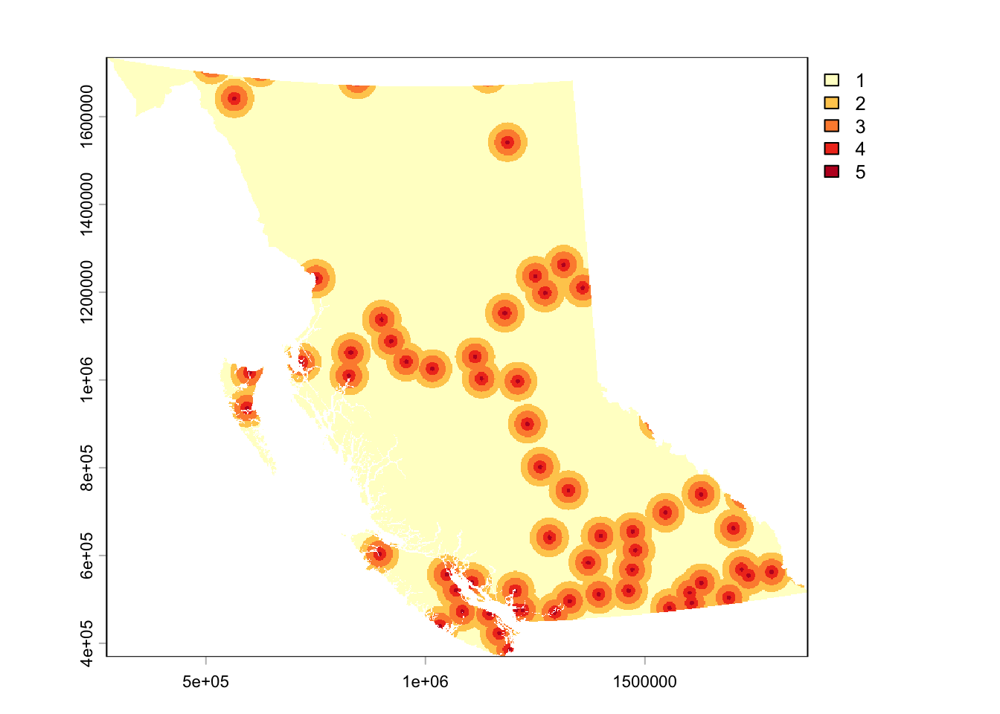
1.2.6 Proximity to Major Roads
Data source: BC Data Catalogue
Repeat process using locations of major roads.
# Load in vector layer
roads <- sf::st_read("/Users/kenziethomson/Library/CloudStorage/OneDrive-UBC/RA/Data/Criteria/Raw/BCGW_02001F02_1784319511692_11424/DBM_BC_7H_MIL_ROADS_LINE.gdb")
# Transform to spatvect for processing
roads_v <- vect(roads)
# Create Euclidean distance raster showing proximity to substations that spatially conforms to our template
roads_dist <- terra::distance(template, roads_v, rasterize = TRUE)
# Mask to template boundary
roads_mask <- mask(roads_dist, template)
# Save in cleaned data folder
writeRaster(roads_mask, "/Users/kenziethomson/Library/CloudStorage/OneDrive-UBC/RA/SolarModel_Guide/data/criteria/cleaned/roads_cleaned.tif", overwrite = TRUE)Reclassify to a 1-5 suitability scale:
# Reclassify using a defined matrix
# Units = meters because our crs = projected to BC Albers
m <- c(0, 1000, 5,
1000, 5000, 4,
5000, 15000, 3,
15000, 30000, 2,
30000, Inf, 1)
# Create matrix
roads_m <- matrix(m, ncol = 3, byrow = TRUE)
# Apply classification
roads_reclass <- terra::classify(roads_mask, roads_m, include.lowest = TRUE, right = FALSE)
# Save in reclassified data folder
writeRaster(roads_reclass, "/Users/kenziethomson/Library/CloudStorage/OneDrive-UBC/RA/SolarModel_Guide/data/criteria/reclassified/roads_reclassified.tif", overwrite = TRUE)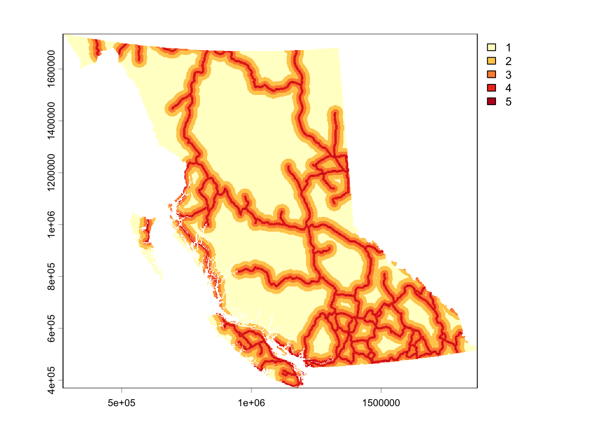
1.3 Land Constraints Processing
This portion of the analysis creates the land constraints spatial mask used to eliminate land from the suitability analysis that is restricted from solar farm development due to technical, environmental, or regulatory factors.
Land constraints include:
Land covers - water, permanent snow and ice, wetlands, artificial and built environments
Linear Features - All roads (including FSRs) and railways
Densely forested areas (canopy density > 40%)
Agricultural Land Reserve with a Soil Capability Class 1-3
Protected and conserved areas
Archaeologically and culturally sensitive areas
Each layer will be individually transformed to a binary where:
- 0 = land included in the constraints mask (not suitable)
- 1 = land that is not included in the constraints mask (suitable)
Each layers cells classified as ‘0’ will then be merged to create a master restriction zone layer.
1.3.1 Land Cover
Data source: Government Canada Census of Environment Land Cover Register
Clean data:
# Load in land cover register layer
lcr = rast("/Users/kenziethomson/Library/CloudStorage/OneDrive-UBC/RA/Data/Criteria/Raw/LCR_RCT_2020.tif")
# Create a BC boundary layer in the projection of the lcr raster so that we can crop it. We cannot crop it using the template raster yet because the crs' are different and cannot alter the template without affecting the grid.
target_crs <- crs(lcr)
bc_lcr_boundary <- sf::st_transform(bc, target_crs)
# Crop lcr to bc bounding box
lcr_crop <- crop(lcr, bc_lcr_boundary)
# Now that the layer is cropped to BC (rather than all of Canada), we can reproject it and mask it to our template
# Method = near - use nearest neighbor as method to preserve integer classification of original layer
lcr_proj <- project(lcr_crop, template, method = "near")
# Mask to BC administrative boundary
lcr_mask <- mask(lcr_proj, template)
# Save to cleaned constraints folder
writeRaster(lcr_mask, "/Users/kenziethomson/Library/CloudStorage/OneDrive-UBC/RA/SolarModel_Guide/data/constraints/cleaned/lcr_cleaned.tif")Reclassify to 1/0 binary using classification codes listed below:
| Class Name | Class Code | Suitable? |
|---|---|---|
| Built up and artificial surface | 1 | No |
| Cropland | 2 | Yes |
| Inland water body | 3 | No |
| Treed (non-wetland) | 4 | Yes |
| Treed wetland | 5 | No |
| Treed area disturbance | 6 | Yes |
| Grassland and shrubland | 7 | Yes |
| Wetland (non-treed) | 8 | No |
| Sparsely vegetated land | 9 | Yes |
| Barren land | 10 | Yes |
| Permanent snow and ice | 11 | No |
# Create reclassification scheme
# 0 = not suitable - within constraints
# 1 = suitable - not within constraints
m <- c(1, 0,
2, 1,
3, 0,
4, 1,
5, 0,
6, 1,
7, 1,
8, 0,
9, 1,
10, 1,
11, 0)
# Create matrix
lcr_matrix <- matrix(m, ncol = 2, byrow = TRUE)
# Apply classification
lcr_binary <- terra::classify(lcr_mask, lcr_matrix)
# Save to reclassified folder
writeRaster(lcr_binary, "/Users/kenziethomson/Library/CloudStorage/OneDrive-UBC/RA/SolarModel_Guide/data/constraints/reclassified/lcr_binary.tif", overwrite = TRUE)
1.3.2 Linear Features - Roads and Railways
Data source: BC Data Catalogue
Clean the data by selecting the correct layer from the geodatabase, rasterizing it into a binary structure, and masking it to our template.
# Roads
# View available layers in BC Digital Road Atlas geodatabase
st_layers("/Users/kenziethomson/Library/CloudStorage/OneDrive-UBC/RA/Data/Criteria/Raw/dgtl_road_atlas.gdb")
# DGTL_ROAD_ATLAS_MPAR_SP = includes all the demographic roads in addition to the full dataset of non-demographic roads - roads without names.
# DGTL_ROAD_ATLAS_DPAR_SP = includes only roads that have names. These are primarily highways and local roads, along with named resource roads.
# Select road layer that contains ALL roads
roads <- sf::st_read("/Users/kenziethomson/Library/CloudStorage/OneDrive-UBC/RA/Data/Criteria/Raw/dgtl_road_atlas.gdb", layer = "DGTL_ROAD_ATLAS_MPAR_SP")
# Convert sf object to spatvect
roads_vect <- vect(roads)
# Rasterize layer and spatially conform to our template
# Set field to 0 (unsuitable) and background to 1 (suitable) so all non-road cells are assigned a value of 1
roads_rast <- rasterize(roads_vect, template, field = 0, background = 1)
# Mask to the template
roads_binary <- mask(roads_rast, template)
# Save into the cleaned constraints folder
writeRaster(roads_binary, "/Users/kenziethomson/Library/CloudStorage/OneDrive-UBC/RA/SolarModel_Guide/data/constraints/reclassified/roads_binary.tif") # Railways
# Read in railway sf object
rails <- sf::st_read("/Users/kenziethomson/Library/CloudStorage/OneDrive-UBC/RA/Data/Mask/Raw Data/railways.gpkg")
# Convert sf object to spatvect
rails_vect <- vect(rails)
# Rasterize layer and spatially conform to our template
# Set field to 0 (unsuitable) and background to 1 (suitable) so all non-road cells are assigned a value of 1
rails_rast <- rasterize(rails_vect, template, field = 0, background = 1)
# Mask to the template
rails_binary <- mask(rails_rast, template)
# Save into the cleaned constraints folder
writeRaster(rails_binary, "/Users/kenziethomson/Library/CloudStorage/OneDrive-UBC/RA/SolarModel_Guide/data/constraints/reclassified/rails_binary.tif") 
1.3.3 Dense Forests
Because the land cover register defines treed areas as “land covered with trees with a canopy cover over 10%”, we want to further isolate and protect just those moderate-to-dense forests, which has a canopy cover of 40% (BC Ministry of Forests).
Data source: National Terrestrial Ecosystem Monitoring System (NTEMS)
Clean the data by isolating land with a canopy cover greater than 40% by creating a binary and then mask to our template.
# Read in NTEMS canopy cover raster
canopy <- rast("/Users/kenziethomson/Downloads/CA_canopy_cover_2022/CA_canopy_cover_2022.tif")
# Create a BC boundary layer in the projection of the canopy raster so that we can crop it. We cannot crop it using the template raster yet because the crs' are different and cannot alter the template without affecting the grid.
target_crs <- crs(canopy)
bc_canopy_boundary <- sf::st_transform(bc, target_crs)
# Crop canopy cover raster to bc bounding box
canopy_crop <- crop(canopy, bc_canopy_boundary)
# Define non-overlapping bins and classify
m <- c(0, 40, 1,
40, 100, 0)
# Create matrix
canopy_matrix <- matrix(m, ncol = 3, byrow = TRUE)
# Apply classification
canopy_binary <- terra::classify(canopy_crop, canopy_matrix, include.lowest = TRUE, right = FALSE)
# Project the binary/categorical result to your template using NN
canopy_binary <- project(canopy_binary, template, method = "near")
# Mask to BC administrative boundary
canopy_binary <- mask(canopy_binary, template)
# Save to reclassified folder
writeRaster(canopy_binary, "/Users/kenziethomson/Library/CloudStorage/OneDrive-UBC/RA/SolarModel_Guide/data/constraints/reclassified/canopy_binary.tif", overwrite = TRUE)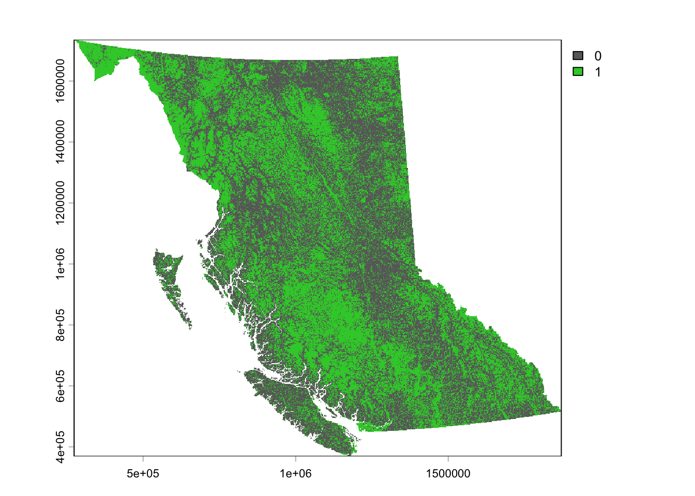
1.3.4 Agricultural Land Reserve / Soil Capability
Data source: ALR GIS Data
Data source:
The ALR is a provincial land use zone that prioritizes and protects agricultural land. The whole ALR will not be included in the constraints - rather, only portions of the ALR with soil capability classes of 1 and 2 will be within the restriction zone. This will protect the most arable land from development, while also promoting the promising concept of agrovoltaics.
To clean the data isolate polygons with a soil capability class less than 3 then intercept soil capability data with the ALR layer. Rasterize remaining data into a binary and mask to our template.
soils <- sf::st_read("/Users/kenziethomson/Library/CloudStorage/OneDrive-UBC/RA/Data/Mask/Raw Data/50KAgCap.gdb")
alr <- sf::st_read("/Users/kenziethomson/Library/CloudStorage/OneDrive-UBC/RA/Data/Mask/Raw Data/ALR_Polygons/ALR_Polygons.shp")
# View fields
# CC_Label = capability class
head(soils)
# Create function that selects polygons that are at least 50% class 1, 2, OR 3. Creates a new column called pct_123.
pct_class_123 <- function(label) {
if (is.na(label)) return(NA_real_)
m <- str_match_all(label, "(?:(\\d+):)?(\\d)[A-Za-z]*")[[1]]
pct <- ifelse(is.na(m[,2]), 100, as.numeric(m[,2]) * 10)
class <- as.numeric(m[,3])
sum(pct[class %in% c(1, 2, 3)])
}
# Apply function to soils sf object
prime_soils <- soils %>%
mutate(pct_123 = sapply(CC_Label, pct_class_123)) %>%
filter(!is.na(pct_123) & pct_123 >= 50)
# Intersect prime soils layer with the ALR polygons to create a new layer showing where the ALR and the prime soils polygons overlap.
alr_soils_int <- sf::st_intersection(alr, prime_soils)
# Convert to spatvect
alr_soils_vect <- vect(alr_soils_int)
# Rasterize layer and spatially conform to our template
# Set field to 0 (unsuitable) and background to 1 (suitable) so all non-road cells are assigned a value of 1
alr_soils_rast <- rasterize(alr_soils_vect, template, field = 0, background = 1)
# Mask to the template
alr_soils_binary <- mask(alr_soils_rast, template)
# Save to reclassified folder
writeRaster(alr_soils_binary, "/Users/kenziethomson/Library/CloudStorage/OneDrive-UBC/RA/SolarModel_Guide/data/constraints/reclassified/alr_soils_binary.tif", overwrite = TRUE)1.3.5 Protected and Conserved Areas
Data source: Canadian Protected and Conserved Areas Database
Clean and rasterize data as usual, with the additional step of adding a 1km ecological buffer around Protected and Conserved Areas (PCA) polygons before rasterizing.
pca <- sf::st_read("/Users/kenziethomson/Library/CloudStorage/OneDrive-UBC/RA/Data/Mask/Raw Data/ProtectedConservedArea_2024.gdb", layer = "ProtectedConservedArea_2024")
# Create a BC boundary layer in the projection of the PCA raster so that we can crop it. We cannot crop it using the template raster yet because the crs' are different and cannot alter the template without affecting the grid.
target_crs <- crs(pca)
bc_pca_boundary <- sf::st_transform(bc, target_crs)
# Clip PCA to BC bounding box
pca_clip <- sf::st_intersection(pca, bc_pca_boundary)
# Buffer 1000m
pca_buff <- sf::st_buffer(pca_clip, 1000)
# Make spatvect
pca_buff_vect <- vect(pca_buff)
# Now that the layer is cropped to BC (rather than all of Canada), we can reproject it and mask it to our template
pca_proj <- project(pca_buff_vect, template)
# Rasterize into a binary, ensuring it spatially conforms to template
pca_rast <- rasterize(pca_proj, template, field = 0, background = 1)
# Mask to the template
pca_binary <- mask(pca_rast, template)
# Save to cleaned constraints folder
writeRaster(pca_binary, "/Users/kenziethomson/Library/CloudStorage/OneDrive-UBC/RA/SolarModel_Guide/data/constraints/reclassified/pca_binary.tif")
1.4 Land Constraints Mask
Now that all data representing restriction zones are in binary raster format, we will easily combine them together into one master constraint mask to use on our final suitability surface.
Logic: If all cells across all layers equals 1, cell in final mask will equal 1. If even one cell across all layers equal 0, cell in final mask will equal 0.
We can use simple multiplication to accomplish this.
constraints <- (pca_binary *
alr_soils_binary *
canopy_binary *
roads_binary *
rails_binary *
lcr_binary)
# Save
writeRaster(constraints, "/Users/kenziethomson/Library/CloudStorage/OneDrive-UBC/RA/SolarModel_Guide/data/constraints/mask/constraints.tif", overwrite = TRUE)
# Summarize cell count and area occupied by each constraint in a df
cons_files <- list.files(
path = "/Users/kenziethomson/Library/CloudStorage/OneDrive-UBC/RA/SolarModel_Guide/data/constraints/reclassified",
pattern = "\\.tif", full.names = TRUE)
cons_list <- list()
for (i in seq_along(cons_files)){
r <- rast(cons_files[i])
df_freq <- as.data.frame(freq(r))
df_freq$source <- basename(cons_files[i])
cons_list[[i]] <- df_freq
}
cons_df <- do.call(rbind, cons_list)
pixel_area_km2 <- prod(res(constraints)) / 1e6
cons_df <- cons_df %>%
mutate(area = count * pixel_area_km2) %>%
mutate(percent_total = area / 948846.6012 * 100)
write.csv(cons_df, "/Users/kenziethomson/Library/CloudStorage/OneDrive-UBC/RA/SolarModel_Guide/data/constraints/mask/constraints_summary.csv") X layer value count source area percent_total
1 1 1 0 8809854 alr_soils_binary.tif 7928.8298 0.8356282
2 2 1 1 1045469301 alr_soils_binary.tif 940917.7714 99.1643718
3 3 1 0 540275261 canopy_binary.tif 486245.3580 51.2459398
4 4 1 1 514003894 canopy_binary.tif 462601.2432 48.7540602
5 5 1 0 138721515 lcr_binary.tif 124848.7532 13.1579491
6 6 1 1 914034994 lcr_binary.tif 822627.4733 86.6976255
7 7 1 0 341704376 pca_binary.tif 307532.4351 32.4111858
8 8 1 1 712574779 pca_binary.tif 641314.1661 67.5888142
9 9 1 0 239723 rails_binary.tif 215.7496 0.0227381
10 10 1 1 1054039432 rails_binary.tif 948630.8516 99.9772619
11 11 1 0 25267303 roads_binary.tif 22740.4615 2.3966426
12 12 1 1 1029011852 roads_binary.tif 926106.1397 97.6033574Step 2: Analytic Hierarchy Process
AHP is used to assign weights to each input criteria layer. A variety of experts have provided individual AHP weighting schemes. In this step, we use a for-loop to that will:
- Read in multiple excel sheets holding the individual AHP-surveys
- Isolate and pull the Pairwise Comparison Matrix (PCM)
- Aggregate them using the geometric mean method
- Construct a master PCM
- Generate final weights
criteria <- c("GTI", "Slope", "Aspect", "Prox to Cities", "Prox to Roads", "Prox to Substations")
n <- length(criteria)
# Read in folder and store files in a string
folder_path <- "/Users/kenziethomson/Library/CloudStorage/OneDrive-UBC/RA/SolarModel_Guide/data/ahp"
file_paths <- list.files(path = folder_path, pattern = "\\.xlsx", full.names = TRUE)
# Create arrays of length n*n*number of surveys to store PCMs
all_matrices <- array(NA, dim = c(n, n, length(file_paths)))
# Create loop that extracts PCM from each sheet and combines them
for (i in seq_along(file_paths)) {
# Pull PCM
matrix_df <- read_excel(
file_paths[i],
sheet = "Solar",
range = "C79:H84",
col_names = FALSE)
# Convert to standard numeric matrix
m <- as.matrix(matrix_df)
all_matrices[ , , i] <- m
}
# Aggregate using Geometric Mean method
master_pcm <- matrix(1, nrow = n, ncol = n)
# Rather than computing geometric mean into the upper triangle of the pcm and deriving the lower triangle as the reciprocal, we need to store the raw computed values in the lower triangle and derive the upper triangle as the reciprocal. We need to do this because of the way CR() checks the PCM.
for (i in 1:(n - 1)) {
for (j in (i + 1):n) {
vals <- all_matrices[i, j, ]
g <- prod(vals)^(1 / length(vals)) # geometric mean, ratio "i vs j"
h <- 1 / g # ratio "j vs i" — this is our primitive value
master_pcm[j, i] <- h # store the primitive in the LOWER triangle
master_pcm[i, j] <- 1 / h # derive UPPER as its reciprocal
}
}
# Ensure column diagonal is 1 and criteria names are present
diag(master_pcm) <- 1
colnames(master_pcm) <- rownames(master_pcm) <- criteria
# Calculate Consistency Ratio (CR) - must be less than 10% (0.10)
cr_results <- CR(master_pcm)
print(cr_results)
print(master_pcm)Now, derive layer weights from the PCM
# Isolate weights from the third output in cr_results
weights_raw <- cr_results[3]
# Change from list to df
weights_raw <- as.data.frame(weights_raw)
# Normalize table
weights_norm <- weights_raw / sum(weights_raw)
# Convert to percent
weights_percent <- weights_norm * 100
# Get final weights in one df
ahp_weights <- cbind(criteria, weights_norm, weights_percent)
colnames(ahp_weights) <- c("Criteria", "Decimal", "Percent")
ahp_weights
# Save
write.csv(ahp_weights, "/Users/kenziethomson/Library/CloudStorage/OneDrive-UBC/RA/SolarModel_Guide/data/ahp/ahp_weights.csv")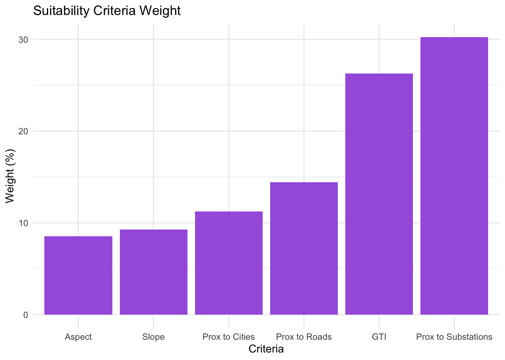
Step 3: Weighted Sum Overlay
This stage brings our weighted suitability criteria layers into one composite output using basic raster math. Each layer is multiplied by its weight and then added together - this is called a Weighted Sum Overlay.
# Load AHP-derived weights in a list
w <- c(GTI = 0.26275243,
Slope = 0.09270032,
Aspect = 0.08552311,
Cities = 0.11224992,
Roads = 0.14434327,
Substations = 0.30243095)
# Multiply layer by respective weight and add together to derive solar PV suitability across BC
raw_suitability <-
gti_reclassified * w["GTI"] +
slope_reclassified * w["Slope"] +
aspect_reclassified * w["Aspect"] +
cities_reclassified * w["Cities"] +
roads_reclassified * w["Roads"] +
subs_reclassified * w["Substations"]
# Save output
writeRaster(raw_suitability, "/Users/kenziethomson/Library/CloudStorage/OneDrive-UBC/RA/SolarModel_Guide/data/suitability_surfaces/raw_suitability.tif")
Transform the continuous suitability gradient back into our 5 integer bins using equal interval and finally, apply the land constraint mask to the classified suitability raster.
# Set bounds
suit_min <- global(raw_suitability, "min", na.rm = TRUE)[1,1]
suit_max <- global(raw_suitability, "max", na.rm = TRUE)[1,1]
# Create the 5 equal interval breaks
ei_breaks <- seq(suit_min, suit_max, length.out = 6)
# Build the 3-column matrix to force equal intervals
m_ei <- matrix(c(
ei_breaks[1], ei_breaks[2], 1,
ei_breaks[2], ei_breaks[3], 2,
ei_breaks[3], ei_breaks[4], 3,
ei_breaks[4], ei_breaks[5], 4,
ei_breaks[5], ei_breaks[6], 5
), ncol = 3, byrow = TRUE)
# Classify using the matrix
classified_suitability <- terra::classify(raw_suitability, rcl = m_ei, include.lowest = TRUE)
# Apply land constraints mask
final_suitability <- terra::mask(classified_suitability, constraints, maskvalues = 0, updatevalue = 0)
# Save
writeRaster(classified_suitability,"/Users/kenziethomson/Library/CloudStorage/OneDrive-UBC/RA/SolarModel_Guide/data/suitability_surfaces/classified_suitability.tif", overwrite = TRUE)
writeRaster(final_suitability, "/Users/kenziethomson/Library/CloudStorage/OneDrive-UBC/RA/SolarModel_Guide/data/suitability_surfaces/final_suitability.tif", overwrite = TRUE)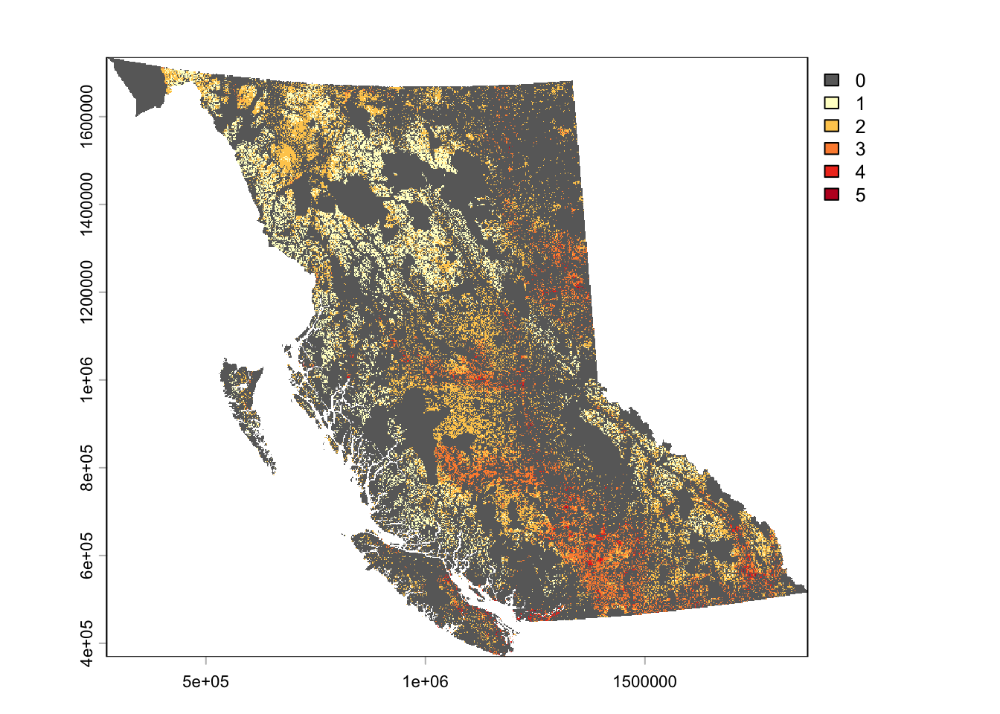

Stage 1 Results
Key result 1: BC’s total land base by suitability class:
# Get frequency table and calculate pixel area (in km²)
pixel_area_km2 <- prod(res(final_suitability)) / 1e6
# Create summary table
suitability_summary <- as.data.frame(freq(final_suitability)) %>%
transform(
area_km2 = count * pixel_area_km2,
acres = count * pixel_area_km2 * 247.105,
percent_of_total = (count * pixel_area_km2 / sum(count * pixel_area_km2)) * 100) %>%
mutate(group = "Aggregate")
# Verify total percentage sums to 100
sum(suitability_summary$percent_of_total)
# Save
write.csv(suitability_summary, "/Users/kenziethomson/Library/CloudStorage/OneDrive-UBC/RA/SolarModel_Guide/data/suitability_surfaces/summary_tables/suitability_summary.csv")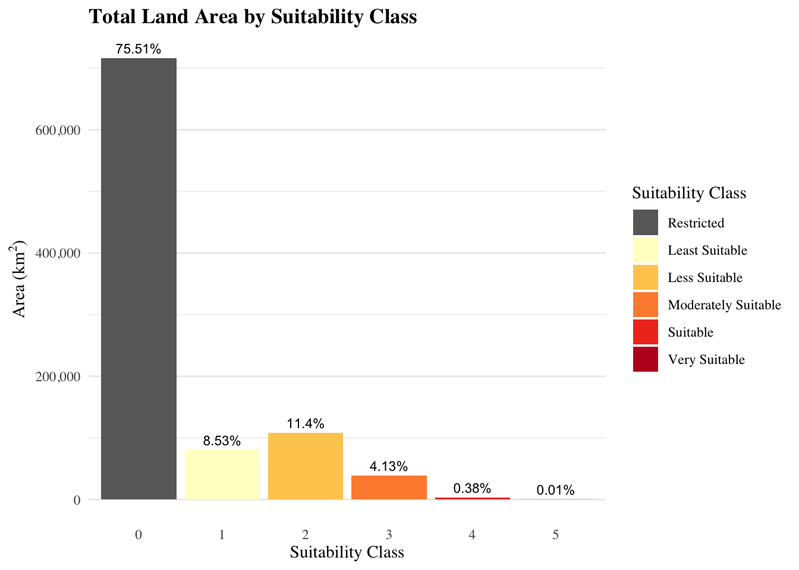
Key result 2: Amount of each suitability class within each regional district:
# Read in regional districts data
rd <- sf::st_read("~/Library/CloudStorage/OneDrive-UBC/RA/Data/Admin Boundaries/RegionalDistrict_Final.shp")
# Project to 3005
rd <- sf::st_transform(rd, crs = 3005)
# Define classes of interest
suit_classes <- 1:5
# Ensure reg dis is a spatvect with matching crs
rd_v <- vect(rd)
rd_v <- project(rd_v, crs(final_suitability))
# Create empty list to store results
zonalStats <- list()
# Initiate loop
for (i in 1:nrow(rd_v)) {
message(paste("Processing district:", i, "of", nrow(rd_v)))
single_dis <- rd_v[i, ]
# Crop and mask to the individual district
final_suitability_crop <- crop(final_suitability, single_dis)
final_suitability_mask <- mask(final_suitability_crop, single_dis)
rm(final_suitability_crop)
# Extract all values from the cropped district directly (no manual chunking needed here)
vals <- values(final_suitability_mask, mat = FALSE, na.rm = TRUE)
# Count the frequencies of your target classes
counts_vec <- sapply(suit_classes, function(cls) sum(vals == cls))
rm(final_suitability_mask)
gc()
zonalStats[[i]] <- tibble(
district_id = i,
district_name = rd_v$AA_NAME[i],
class = suit_classes,
cell_count = as.numeric(counts_vec)
)
}
# Combine all district tables into one master dataframe
final_zonal_df <- bind_rows(zonalStats)
# Create proportions
rd_Zstats_df <- final_zonal_df %>%
group_by(district_id, district_name) %>%
mutate(
total_cells = sum(cell_count, na.rm = TRUE),
proportion = if_else(total_cells > 0, cell_count / total_cells, 0)) %>%
ungroup() %>%
mutate(class = factor(class,
levels = suit_classes,
labels = paste("Class", suit_classes)))
# Add area column using cell res * count
pixel_area_km2 <- prod(res(final_suitability)) / 1e6
rd_Zstats_df$Area_km2 <- round(rd_Zstats_df$cell_count * pixel_area_km2, 2)
# Organize so they are sorted in descending order from most suitable to least suitable
class_order <- rd_Zstats_df %>%
filter(class %in% c("Class 4", "Class 5")) %>%
group_by(district_name) %>%
summarize(total_high_suit_area = sum(Area_km2, na.rm = TRUE)) %>%
arrange(total_high_suit_area) %>%
pull(district_name)
rd_Zstats_df <- rd_Zstats_df %>%
mutate(district_name = factor(as.character(district_name), levels = class_order))
rd_stats_top <- rd_Zstats_df %>%
filter(class %in% c("Class 4", "Class 5")) %>%
group_by(district_name) %>%
summarize(total_high_suit_area = sum(Area_km2))
write.csv(rd_Zstats_df, "/Users/kenziethomson/Library/CloudStorage/OneDrive-UBC/RA/SolarModel_Guide/data/suitability_surfaces/summary_tables/suitability_regDis.csv", row.names = FALSE)Fix naming scheme so that each district in district_name does not say ‘regional district’ at the end
rd_Zstats_df <- rd_Zstats_df %>%
mutate(district_name = str_remove(district_name, "Regional District of")) %>%
mutate(district_name = str_remove(district_name, "Regional District")) %>%
mutate(district_name = str_remove(district_name, "\\(Unincorporated\\)"))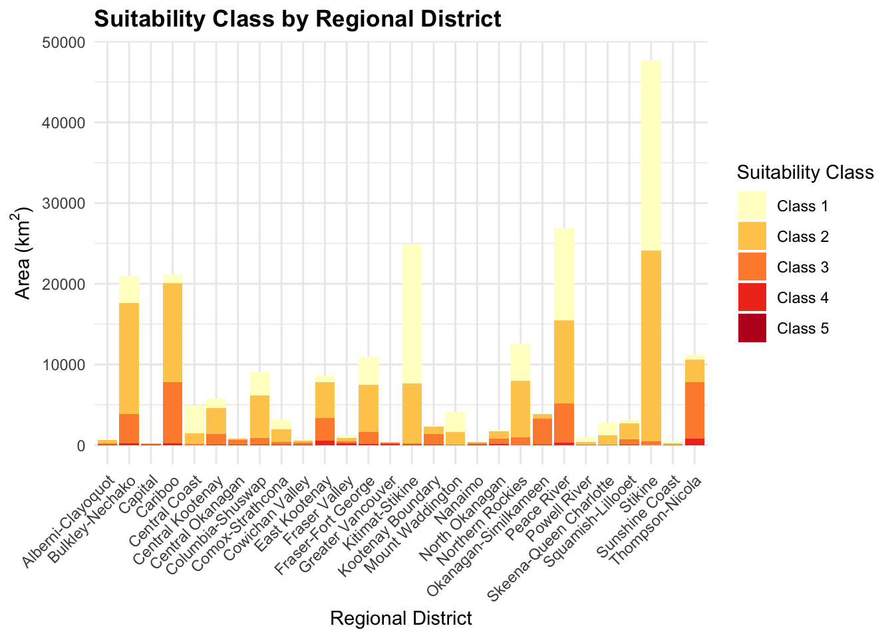
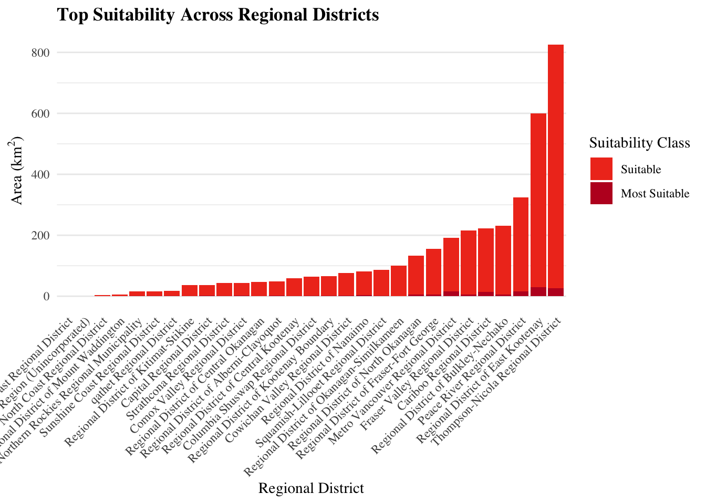
Step 4: Scenario Comparison
4.1 Core Research Team
First, recalculate weights and suitability distribution with just the core research team (names kept confidential).
ahp_response_1 <- data.frame(
Name = "P1",
Organization = "UBC",
Sector = "Academia",
Criteria = c("GTI", "Slope", "Aspect", "Prox to Cities", "Prox to Roads", "Prox to Subs"),
Weight = c(26.9, 3.3, 10.0, 9.0, 24.9, 25.9))
ahp_response_2 <- data.frame(
Name = "P2",
Organization = "UBC",
Sector = "Academia",
Criteria = c("GTI", "Slope", "Aspect", "Prox to Cities", "Prox to Roads", "Prox to Subs"),
Weight = c(18.8, 4.0, 2.7, 6.6, 21.9, 46.0))
core_team_ahp <- rbind(ahp_response_1, ahp_response_2)
core_team_weights <- core_team_ahp %>%
group_by(Criteria) %>%
summarise(Final_Weight = mean(Weight)) %>%
mutate(group = "Core")
# Weighted Sum Overlay with core team weights
core_w <- c(GTI = 0.228,
Slope = 0.0365,
Aspect = 0.0635,
Cities = 0.078,
Roads = 0.234,
Substations = 0.360)
# Multiply layer by respective weight and add together to derive solar PV suitability across BC
core_suitability <-
gti_reclassified * core_w["GTI"] +
slope_reclassified * core_w["Slope"] +
aspect_reclassified * core_w["Aspect"] +
cities_reclassified * core_w["Cities"] +
roads_reclassified * core_w["Roads"] +
subs_reclassified * core_w["Substations"]
# Bins using equal intervals
# Set bounds
suit_min <- global(core_suitability, "min", na.rm = TRUE)[1,1]
suit_max <- global(core_suitability, "max", na.rm = TRUE)[1,1]
# Create the 5 equal interval breaks
ei_breaks <- seq(suit_min, suit_max, length.out = 6)
# Build the 3-column matrix to force equal intervals
m_ei <- matrix(c(
ei_breaks[1], ei_breaks[2], 1,
ei_breaks[2], ei_breaks[3], 2,
ei_breaks[3], ei_breaks[4], 3,
ei_breaks[4], ei_breaks[5], 4,
ei_breaks[5], ei_breaks[6], 5
), ncol = 3, byrow = TRUE)
# Classify using the matrix
core_classified_suitability <- terra::classify(core_suitability, rcl = m_ei, include.lowest = TRUE)
# Apply land constraints mask
core_final_suitability <- terra::mask(core_classified_suitability, constraints, maskvalues = 0, updatevalue = 0)
# Determine suitability distribution
# Get frequency table and calculate pixel area (in km²)
pixel_area_km2 <- prod(res(core_final_suitability)) / 1e6
# Create summary table
core_suitability_summary <- as.data.frame(freq(core_final_suitability)) %>%
transform(
area_km2 = count * pixel_area_km2,
acres = count * pixel_area_km2 * 247.105,
percent_of_total = (count * pixel_area_km2 / sum(count * pixel_area_km2)) * 100) %>%
mutate(group = "Core")
# Verify total percentage sums to 100
sum(core_suitability_summary$percent_of_total)4.2 External Participants/Experts
Repeat process with weights from the other 7 participants that contributed external to the core research team.
ahp_response_3 <- data.frame(
Name = "P3",
Organization = "BC Public Service",
Sector = "Policy",
Criteria = c("GTI", "Slope", "Aspect", "Prox to Cities", "Prox to Roads", "Prox to Subs"),
Weight = c(40.7, 28.2, 17.6, 3.0, 6.1, 4.3))
ahp_response_4 <- data.frame(
Name = "P4",
Organization = "UVIC",
Sector = "Academia",
Criteria = c("GTI", "Slope", "Aspect", "Prox to Cities", "Prox to Roads", "Prox to Subs"),
Weight = c(46.6, 22.0, 8.7, 4.1, 9.3, 9.4))
ahp_response_5 <- data.frame(
Name = "P5",
Organization = "SFU",
Sector = "Academia",
Criteria = c("GTI", "Slope", "Aspect", "Prox to Cities", "Prox to Roads", "Prox to Subs"),
Weight = c(52.6, 4.6, 4.9, 12.6, 12.6, 12.6))
ahp_response_6 <- data.frame(
Name = "P6",
Organization = "SFU",
Sector = "Academia",
Criteria = c("GTI", "Slope", "Aspect", "Prox to Cities", "Prox to Roads", "Prox to Subs"),
Weight = c(41.8, 5.8, 7.0, 23.0, 2.2, 20.3))
ahp_response_7 <- data.frame(
Name = "P7",
Organization = "NRCan CanmetENERGY",
Sector = "Industry",
Criteria = c("GTI", "Slope", "Aspect", "Prox to Cities", "Prox to Roads", "Prox to Subs"),
Weight = c(10.1, 4.7, 3.2, 14.6, 21.1, 46.3))
ahp_response_8 <- data.frame(
Name = "P8",
Organization = "Community Energy Assosciation",
Sector = "Industry",
Criteria = c("GTI", "Slope", "Aspect", "Prox to Cities", "Prox to Roads", "Prox to Subs"),
Weight = c(30.8, 15.9, 5.5, 3.4, 7.9, 36.6))
ahp_response_9 <- data.frame(
Name = "P9",
Organization = "Community Energy Assosciation",
Sector = "Policy",
Criteria = c("GTI", "Slope", "Aspect", "Prox to Cities", "Prox to Roads", "Prox to Subs"),
Weight = c(40.9, 9.6, 5.8, 3.7, 15.3, 24.7))
# Bind df's
external_ahp <- rbind(ahp_response_3,
ahp_response_4,
ahp_response_5,
ahp_response_6,
ahp_response_7,
ahp_response_8,
ahp_response_9)
external_team_ahp <- rbind(ahp_response_3, ahp_response_4, ahp_response_5, ahp_response_6, ahp_response_7, ahp_response_8, ahp_response_9)
external_team_weights <- external_team_ahp %>%
group_by(Criteria) %>%
summarise(Final_Weight = mean(Weight)) %>%
mutate(group = "External")
# Weighted Sum Overlay with core team weights
external_w <- c(GTI = 0.376,
Slope = 0.130,
Aspect = 0.0753,
Cities = 0.092,
Roads = 0.106,
Substations = 0.220)
# Multiply layer by respective weight and add together to derive solar PV suitability across BC
external_suitability <-
gti_reclassified * external_w["GTI"] +
slope_reclassified * external_w["Slope"] +
aspect_reclassified * external_w["Aspect"] +
cities_reclassified * external_w["Cities"] +
roads_reclassified * external_w["Roads"] +
subs_reclassified * external_w["Substations"]
# Bins using equal intervals
# Set bounds
suit_min <- global(external_suitability, "min", na.rm = TRUE)[1,1]
suit_max <- global(external_suitability, "max", na.rm = TRUE)[1,1]
# Create the 5 equal interval breaks
ei_breaks <- seq(suit_min, suit_max, length.out = 6)
# Build the 3-column matrix to force equal intervals
m_ei <- matrix(c(
ei_breaks[1], ei_breaks[2], 1,
ei_breaks[2], ei_breaks[3], 2,
ei_breaks[3], ei_breaks[4], 3,
ei_breaks[4], ei_breaks[5], 4,
ei_breaks[5], ei_breaks[6], 5
), ncol = 3, byrow = TRUE)
# Classify using the matrix
external_classified_suitability <- terra::classify(external_suitability, rcl = m_ei, include.lowest = TRUE)
# Apply land constraints mask
external_final_suitability <- terra::mask(external_classified_suitability, constraints, maskvalues = 0, updatevalue = 0)
# Determine suitability distribution
# Get frequency table and calculate pixel area (in km²)
pixel_area_km2 <- prod(res(final_suitability)) / 1e6
# Create summary table
external_suitability_summary <- as.data.frame(freq(external_final_suitability)) %>%
transform(
area_km2 = count * pixel_area_km2,
acres = count * pixel_area_km2 * 247.105,
percent_of_total = (count * pixel_area_km2 / sum(count * pixel_area_km2)) * 100) %>%
mutate(group = "External")
# Verify total percentage sums to 100
sum(external_suitability_summary$percent_of_total)4.3 Sensitivity Analysis Comparison
Compile results for comparison
# Bind rows into a master suitability summary table
suitability_summary_comparison <- rbind(suitability_summary,
core_suitability_summary,
external_suitability_summary)
# Bind rows into a master weights table
aggregate_ahp_weights <- ahp_weights %>%
select(Criteria, Percent) %>%
rename(Final_Weight = Percent) %>%
mutate(group = "Aggregate")
weights_comparison <- rbind(core_team_weights,
external_team_weights,
aggregate_ahp_weights)
weights_comparison <- weights_comparison %>%
mutate(Criteria = str_replace(Criteria, "Prox to Subs$", "Prox to Substations")) %>%
mutate(Criteria = reorder(Criteria, Final_Weight, FUN = mean))Visualize difference in weighting schemes
# Multi bar plot showing weight distribution among groups
ggplot(weights_comparison, aes(x = Criteria, y = Final_Weight / 100, fill = group)) +
geom_col(position = position_dodge(width = 0.8), width = 0.7) +
scale_y_continuous(labels = scales::percent_format(accuracy = 1), limits = c(0, 0.5)) +
geom_text(aes(label = paste0(round(Final_Weight), "%")),
position = position_dodge(width = 0.8),
vjust = -0.5, size = 2.5) +
labs(
title = "Criteria Weight Distribution Across Different Expert Group",
x = "Criteria",
y = "Assigned Weight",
fill = "Group") +
scale_fill_manual(values = c("#A6CEE3", "#B2DF8A", "#FDBF6F")) +
theme_minimal(base_size = 12) +
theme(axis.text.x = element_text(angle = 30, hjust = 1))
# Multi bar plot showing suitability area distribution among groups
# Create a conditional label column for restricted area so it only plots once
plot_data <- suitability_summary_comparison %>%
mutate(
# If value is 0, only assign a label to the "Core" (middle) group.
# For all other classes (1-5), label normally.
display_label = case_when(
value == 0 & group != "Core" ~ "",
TRUE ~ sprintf("%.2f%%", percent_of_total)
)
)
# Plot using the new custom labels
ggplot(plot_data, aes(fill = group, x = factor(value), y = percent_of_total)) +
geom_col(position = position_dodge(width = 0.8), width = 0.7) +
geom_text_repel(
aes(label = display_label),
position = position_dodge(width = 0.8),
direction = "y", # Locks horizontal movement so labels stay over their bars
force = 2.5, # Pushes overlapping percentages apart vertically
box.padding = 0.3,
point.padding = 0.1,
min.segment.length = 1000, # Hides the connector lines entirely since position_dodge keeps them close
size = 2.5,
show.legend = FALSE) +
theme_minimal(base_size = 12) +
scale_fill_manual(values = c("#A6CEE3", "#B2DF8A", "#FDBF6F")) +
scale_y_continuous(
limits = c(0, 90),
breaks = seq(0, 75, by = 25),
expand = c(0, 0)) +
labs(
x = "Suitability Class",
y = "Percent of Total Area",
title = "Suitability Distribution Across Different Expert Groups",
fill = "Group")Stage 2: Technical Potential
Data source: Global Solar Atlas
Calculating the technical potential of the most suitable areas provides insight into the provinces total resource potential. This section utilizes Potential Photovoltaic Output data in combination with energy yield assumptions to derive two key results: Total Installable Capacity and Total Annual Energy.
We will generate results corresponding to three scenarios: 1MW (baseline); 2MW within municipal boundaries; 100MW outside municipal boundaries
Step 1: Prepare Data
First, clean PVOUT raster and isolate class 4 and 5 pixels from our final suitability raster - this way we are only deriving energy yield estimates from our most optimal land.
# Read in pvout data
pvout <- rast("/Users/kenziethomson/Library/CloudStorage/OneDrive-UBC/RA/SolarModel_Guide/data/energy/PVOUT.tif")
target_crs <- crs(pvout)
bc_pvout_boundary <- sf::st_transform(bc, target_crs)
# Crop lcr to bc bounding box
pvout_crop <- crop(pvout, bc_pvout_boundary)
# Now that the layer is cropped to BC (rather than all of Canada), we can reproject it and mask it to our template
# Method = bilinear - use nearest neighbor as method to preserve integer classification of original layer
pvout_proj <- project(pvout_crop, template, method = "bilinear")
# Mask to BC administrative boundary
pvout_mask <- mask(pvout_proj, template)
writeRaster(pvout_mask, "/Users/kenziethomson/Library/CloudStorage/OneDrive-UBC/RA/SolarModel_Guide/data/energy/pvout_clean.tif",overwrite = TRUE)
pvout_mask <- rast("/Users/kenziethomson/Library/CloudStorage/OneDrive-UBC/RA/SolarModel_Guide/data/energy/pvout_clean.tif")# Isolate Class 4 & 5
class4 <- final_suitability
class4[final_suitability != 4] <- NA
writeRaster(class4, "/Users/kenziethomson/Library/CloudStorage/OneDrive-UBC/RA/SolarModel_Guide/data/energy/class4.tif")
class5 <- final_suitability
class5[final_suitability != 5] <- NA
writeRaster(class5, "/Users/kenziethomson/Library/CloudStorage/OneDrive-UBC/RA/SolarModel_Guide/data/energy/class5.tif")Now, use a GIS GUI (ArcGIS Pro, QGIS) to transform each raster into a polygon layer - terra:as.polygons() never runs, thats why a separate software is necessary. Once done, we will filter out sites smaller than 5 acres (minimum size threshold for a 1 MW installation)
# Load in polygon layers made in a GIS GUI
class4_poly <- sf::st_read("/Users/kenziethomson/Library/CloudStorage/OneDrive-UBC/RA/SolarModel_Guide/data/energy/class4_polygons.shp")
class5_poly <- sf::st_read("/Users/kenziethomson/Library/CloudStorage/OneDrive-UBC/RA/SolarModel_Guide/data/energy/class5_polygons.shp")
# Combine class 4 and 5 polygons into one layer
base_poly <- rbind(class4_poly, class5_poly)
# Calculate area metrics
base_poly$Area_m2 <- as.numeric(sf::st_area(base_poly))
base_poly$Area_acres <- base_poly$Area_m2 / 4046.85642
base_poly$Area_km2 <- base_poly$Area_m2 / 1e6
# Report area metrics:
cat("The total area of class 4 and class 5 sites is:", sum(base_poly$Area_km2), "km2. ")
cat("The total number of sites are:", nrow(base_poly))Filter by scenario and apply specific minimum map unit (mmu) filters
# Load municipal boundaries
muni_bound <- sf::st_read("~/Library/CloudStorage/OneDrive-UBC/RA/Data/Admin Boundaries/municipalities.shp")
muni_bound <- sf::st_union(muni_bound)
# Post-hoc additional constraint layer - local parks in Kamloops
parks <- sf::st_read("~/Downloads/ParksSHP/Park.shp")
parks <- sf::st_union(parks)
parks <- sf::st_transform(parks, st_crs(base_poly))
# Clip out the parks from your base suitability polygons
base_poly <- sf::st_difference(base_poly, parks)
# Scenario 1: Regular 1 MW installation (5-acre MMU province-wide)
scen_1mw <- base_poly %>% filter(Area_acres > 5)
# Perform true spatial clips at the municipal boundary line
inside_muni <- sf::st_intersection(base_poly, muni_bound)
outside_muni <- sf::st_difference(base_poly, muni_bound)
# Scenario 2: 2 MW installations WITHIN municipal boundaries (10-acre MMU)
scen_2mw_muni <- inside_muni %>%
mutate(
Area_m2 = as.numeric(sf::st_area(geometry)),
Area_acres = Area_m2 / 4046.85642,
Area_km2 = Area_m2 / 1e6) %>%
filter(Area_acres > 10)
# Scenario 3: 100 MW installations OUTSIDE municipal boundaries (500-acre MMU)
scen_100mw_outside <- outside_muni %>%
mutate(
Area_m2 = as.numeric(sf::st_area(geometry)),
Area_acres = Area_m2 / 4046.85642,
Area_km2 = Area_m2 / 1e6) %>%
filter(Area_acres > 500)Step 2: Create Custom Solar Resource Function
We will assign each polygon a specific Ground Cover Ratio (GCR) value based on the part of the province it falls within.
Polygons in the northern latitudinal band (55.884 deg - 59.646 deg) are assigned a GCR of 0.22663; Polygons in the central latitudinal band (52.122 deg - 55.884 deg) are assigned a GCR of 0.26342; Polygons in the southern latitudinal band (48.361 deg - 52.122 deg) are assigned a GCR of 0.31406.
Then, the function will calculate the resource potential (capacity and energy) of all sites.
Installable Capacity is calculated using five variables: 1. the area of each site; 2. a panel efficiency of 23% 3. latitude-dependent Ground Cover Ratios, which account for the spacing needed between panel rows to prevent self-shading; 4. A packing density ratio, which accounts for the difference between the panel footprint and the full land requirement of each site; 5. and a standard test condition of 1kWh per square meter
Annual Energy is calculated by multiplying the Installable Capacity by the average PVOUT of the site.
# Define the GCR lookup vector once
gcr_lookup <- c(
"North" = 0.22663,
"Central" = 0.26342,
"South" = 0.31406)
# Create a processing function for any scenario layer
process_solar_scenario <- function(sf_layer, pvout_mask) {
sf_layer %>%
# 1. Add centroid latitude
mutate(latitude = st_coordinates(st_transform(st_centroid(geometry), 4326))[, "Y"]) %>%
# 2. Assign latitudinal zone
mutate(
lat_zone = case_when(
latitude < 52.122 ~ "South",
latitude < 55.884 ~ "Central",
TRUE ~ "North")
) %>%
# 3. Dynamically assign GCR
mutate(GCR = gcr_lookup[lat_zone]) %>%
# 4. Calculate Installable Capacity (Ci)
mutate(Ci_kW = Area_m2 * 0.23 * 0.724 * GCR) %>%
# 5. Extract zonal mean pvout
mutate(pvout_mean = exact_extract(pvout_mask, ., fun = "mean")) %>%
# 6. Calculate Annual Energy Production (Ei)
mutate(Ei_kWh = Ci_kW * pvout_mean)
}
# Run the function across all three scenarios in one go
scen_1mw_energy <- process_solar_scenario(scen_1mw, pvout_mask)
scen_2mw_muni_energy <- process_solar_scenario(scen_2mw_muni, pvout_mask)
scen_100mw_outside_energy <- process_solar_scenario(scen_100mw_outside, pvout_mask)
# Save results
sf::st_write(scen_1mw_energy,"~/Library/CloudStorage/OneDrive-UBC/RA/SolarModel_Guide/data/energy/top_energy.shp", append = FALSE)
sf::st_write(scen_2mw_muni_energy,"~/Library/CloudStorage/OneDrive-UBC/RA/SolarModel_Guide/data/energy/top_energy_above2MW_insideMuni.shp", append = FALSE)
sf::st_write(scen_100mw_outside_energy,"~/Library/CloudStorage/OneDrive-UBC/RA/SolarModel_Guide/data/energy/top_energy_above100MW_outsideMuni.shp", append = FALSE)Stage 2 Results
# Create function to summarize results
get_summary <- function(sf_processed, name_str) {
sites <- nrow(sf_processed)
area_km2 <- sum(sf_processed$Area_km2)
cap_GW <- sum(sf_processed$Ci_kW) / 1e6
eng_TWh <- sum(sf_processed$Ei_kWh) / 1e9
cat(sprintf("--- %s ---\n", name_str))
cat(sprintf("Total Sites: %.2f \n", sites))
cat(sprintf("Total Area: %.2f km2\n", area_km2))
cat(sprintf("Total Capacity: %.2f GW\n", cap_GW))
cat(sprintf("Annual Yield : %.2f TWh/year\n\n", eng_TWh))
}
# Print all reports together
cat("########################################\n")
cat(" STAGE 2: SCENARIO COMPARISON \n")
cat("########################################\n\n")
get_summary(scen_1mw_energy, "Regular (1 MW / 5-acre MMU)")
get_summary(scen_2mw_muni_energy, "Community Generation (2 MW Inside Muni / 10-acre MMU)")
get_summary(scen_100mw_outside_energy, "Utility Generation (100 MW Outside Muni / 500-acre MMU)")# Create summary for 1 MW (baseline study) that splits class 4 and class 5
scen_1mw_energy_cl4 <- scen_1mw_energy %>%
filter(Class == 4)
scen_1mw_energy_cl5 <- scen_1mw_energy %>%
filter(Class == 5)
# Create function to summarize results
get_summary <- function(sf_processed, name_str) {
sites <- nrow(sf_processed)
area_km2 <- sum(sf_processed$Area_km2)
mean_pvout <- mean(sf_processed$pvout_mean)
cap_GW <- sum(sf_processed$Ci_kW) / 1e6
eng_TWh <- sum(sf_processed$Ei_kWh) / 1e9
cat(sprintf("--- %s ---\n", name_str))
cat(sprintf("Total Sites: %.2f \n", sites))
cat(sprintf("Mean PVout: %.2f \n", mean_pvout))
cat(sprintf("Total Area: %.2f km2\n", area_km2))
cat(sprintf("Total Capacity: %.2f GW\n", cap_GW))
cat(sprintf("Annual Yield : %.2f TWh/year\n\n", eng_TWh))
}
get_summary(scen_1mw_energy_cl4, "Regular (1 MW / 5-acre MMU) Class 4")
get_summary(scen_1mw_energy_cl5, "Regular (1 MW / 5-acre MMU) Class 5")Determine energy yield per regional district for 1MW installations.
reg_dis <- sf::st_read("~/Library/CloudStorage/OneDrive-UBC/RA/Data/Admin Boundaries/RegionalDistrict_Final.shp")
# Intersect regional district layer with energy
scen_1mw_energy_rd <- sf::st_join(scen_1mw_energy, reg_dis, largest = TRUE)
# Clean table to provide summary stats
# Want to know total capacity and energy per RD within each class
RegDis_energy <- scen_1mw_energy_rd %>%
filter(!is.na(AA_NAME)) %>% # Drop any NA slivers
group_by(AA_NAME) %>%
summarise(total_capacity_GW = sum(Ci_kW)/1000000,
total_energy_TWh = sum(Ei_kWh)/1000000000,
suitable_area_km2 = sum(Area_km2)) %>%
rename(Reg_Dis = AA_NAME) %>%
arrange(total_energy_TWh)
# Drop geometry to export
# Resulting df only has 27 rows because 2 regional districts (Stikine & Central Coast) do not contain any class 4 or class 5 land, therefor there are not included in 'top energy'
RegDis_energy_df <- sf::st_drop_geometry(RegDis_energy)
write_csv(RegDis_energy_df, "/Users/kenziethomson/Library/CloudStorage/OneDrive-UBC/RA/SolarModel_Guide/data/energy/RegDis_energy_summary.csv")
st_write(top_energy, "/Users/kenziethomson/Library/CloudStorage/OneDrive-UBC/RA/SolarModel_Guide/data/energy/top_energy.shp", append = FALSE)Visualize results
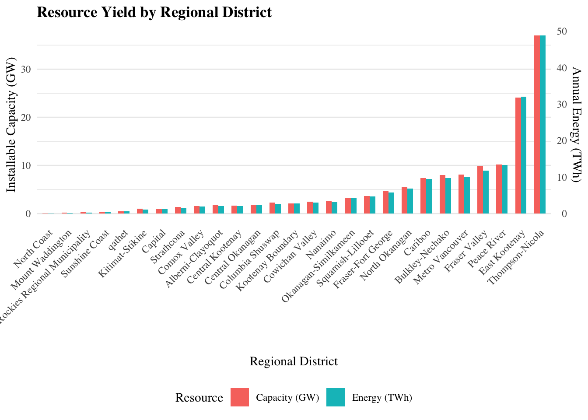
Or, create a factored tier schema. This is cool because the range is so large that its hard to accurately show the full range in both capacity and energy in a double bar chart.
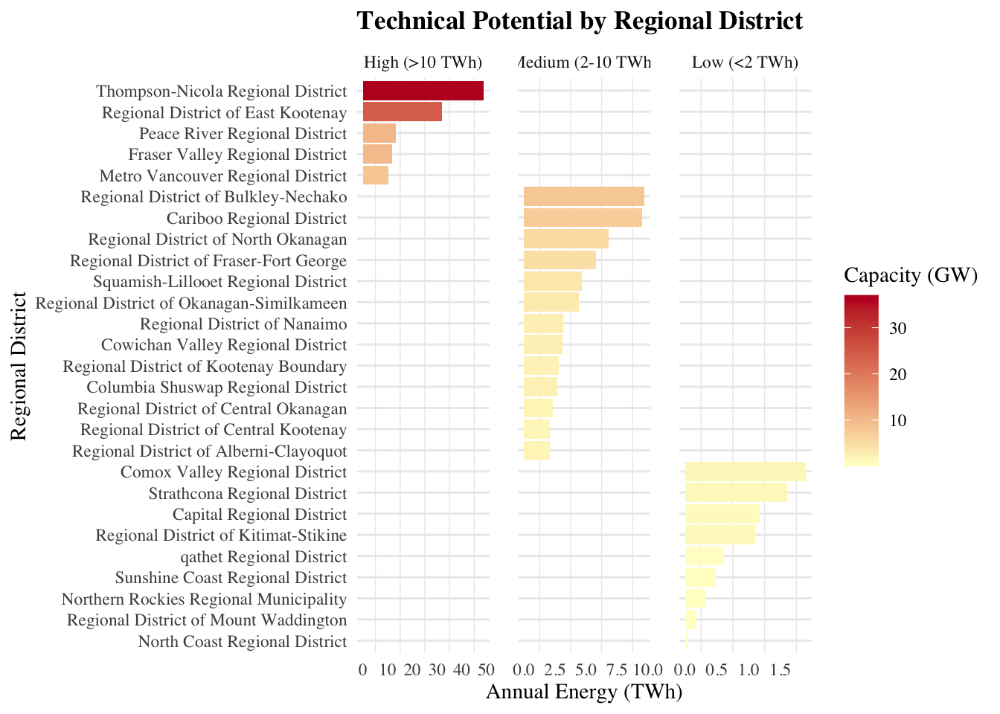
Stage 3: TOPSIS in Thompson-Nicola
The TOPSIS method, which orders suitable sites from best to worst, is based on the concept that the chosen alternative must have the shortest geometric distance from the positive ideal solution and the farthest geometric distance from the negative-ideal solution. It was first developed by Yoon and Hwang in 1981. The TOPSIS method assumes each criterion has a monotonically increasing or decreasing preference which makes it easier to identify the best-ideal and worst-ideal solutions. Consequently, the preference order is generated through a comparison of their geometric distances, usually their Euclidean distances.
We will order sites within the Thompson Nicola regional district - the district with the greatest amount of suitable land and energy yield - to determine the best sites within the province for development
Step 1: Filter data to TN RD
# Read in class 4 and 5 polygons (filtering for sites smaller than 5 acres done already)
top_energy <- sf::st_read("/Users/kenziethomson/Library/CloudStorage/OneDrive-UBC/RA/SolarModel_Guide/data/energy/top_energy.shp")
# Isolate thompson nicola rd
tn_rd <- sf::st_read("~/Library/CloudStorage/OneDrive-UBC/RA/Data/Admin Boundaries/RegionalDistrict_Final.shp") %>%
filter(AA_NAME == "Thompson-Nicola Regional District") %>%
st_transform(3005)
# Filter energy polygons to Thompson-Nicola
tn_sites <- st_intersection(tn_rd, top_energy)
cat("Total sites in thompson nicola:", nrow(tn_sites))Step 2: Extract Criteria
# Extract the mean value of each reclassified (1-5) input criteria PER polygon
tn_sites <- tn_sites %>%
mutate(
gti_mean = exact_extract(gti_reclassified, ., fun = "mean"),
slope_mean = exact_extract(slope_reclassified, ., fun = "mean"),
aspect_mean = exact_extract(aspect_reclassified, ., fun = "mean"),
cities_mean = exact_extract(cities_reclassified, ., fun = "mean"),
roads_mean = exact_extract(roads_reclassified, ., fun = "mean"),
subs_mean = exact_extract(subs_reclassified, ., fun = "mean"))
# Change capacity and energy values from kW and kWh to MW and and TWh
tn_sites <- tn_sites %>%
mutate(
capacity_MW = Ci / 1000,
energy_TWh = Ei / 1000000000,
site_id = row_number())Step 3: Build Decision Matrix
Extract from the Thompson Nicola sites data layer the 7 input criteria (6 suitability criteria + annual energy generation)
decision_matrix <- tn_sites %>%
st_drop_geometry() %>%
select(site_id, gti_mean, slope_mean, aspect_mean, cities_mean,
roads_mean, subs_mean, energy_TWh) %>%
as.data.frame()Step 4: Define Weights
We want to take the original weights from the master PCM and add annual energy generation as a criteria used to rank the sites. This means we must reallocate the weights while preserving the relative importance determined by experts.
We will assign annual energy yield (which inherently accounts for area, capacity, and PVout) a weight of 20% and rescale the weights by a factor of 0.80.
# Reallocate to include Energy Yield (20%)
scale_factor <- 0.80 # Preserve relative importance of AHP weights
energy_weight <- 0.20
ahp_weights_original <- c(
gti = 0.26275243,
slope = 0.09270032,
aspect = 0.08552311,
cities = 0.11224992,
roads = 0.14434327,
subs = 0.30243095)
ahp_weights_base <- ahp_weights_original * scale_factor
weights_base <- c(
gti_mean = ahp_weights_base["gti"],
slope_mean = ahp_weights_base["slope"],
aspect_mean = ahp_weights_base["aspect"],
cities_mean = ahp_weights_base["cities"],
roads_mean = ahp_weights_base["roads"],
subs_mean = ahp_weights_base["subs"],
energy_TWh = energy_weight)
# View new weights
weights_baseStep 5: Implement TOPSIS
We will use the topsis() function from the topsis package. This is easier to implement than TOPSIS() from the MCDA package because it internally calculates the Positive Ideal Siutation (PIS), Negative Ideal Siutaion (NIS) and the normalized decision matrix.
# Pull everything from decision matrix minus the site id, this creates the performance table used to rank sites
dm <- decision_matrix %>%
select(-site_id) %>%
as.matrix()
# Run TOPSIS directly
topsis_scores <- topsis(dm,
weights = weights_base,
# All criteria have a + impact because they have been classified on a 1-5 scale where 5 is better so higher is better in all cases
impacts = rep("+", ncol(dm)))
# Extract the scores dataframe from topsis()
topsis_results <- tibble(
site_id = decision_matrix$site_id,
topsis_score = topsis_scores$score,
rank = topsis_scores$rank) %>%
left_join(tn_sites %>%
select(site_id, Area_km2, capacity_MW, energy_TWh),
by = "site_id") %>%
arrange(rank)
# View top 5
(head(topsis_results, 5))
# Join TOPSIS results to the sf object for plotting
tn_sites_ranked <- tn_sites %>%
left_join(topsis_results %>%
select(site_id, topsis_score, rank),
by = "site_id")
# Filter to top 5
top_5_sites <- tn_sites_ranked %>%
filter(rank <= 5) %>%
arrange(rank)
# Save
sf::st_write(tn_sites_ranked, "/Users/kenziethomson/Library/CloudStorage/OneDrive-UBC/RA/SolarModel_Guide/data/topsis/TN_topsis_rankings.shp", append = FALSE)Step 6: Sensitivity Analysis
We need to run a sensitivity analysis to see if the order of top sites change when the weight of annual energy changes. After running this test we can conclude that the ranking is robust and that the weight distribution does not cause rank reversal. Regardless of the weight used for annual energy, the top 5 rankings remain the same.
# Create a tibble to store results
sensitivity_results <- tibble()
# ew = energy weight
for (ew in c(0.10, 0.15, 0.20, 0.25)) {
# Adjust original weight while preserving relative importance, assign energy a new weight
weights_test <- c(ahp_weights_original * (1 - ew), energy_TWh = ew)
topsis_test <- topsis(dm,
weights = weights_test,
impacts = rep("+", ncol(dm)))
top_5_test <- topsis_test %>%
slice_min(rank, n = 5) %>%
mutate(energy_weight = ew)
sensitivity_results <- bind_rows(sensitivity_results, top_5_test)
}
print(sensitivity_results)Stage 3 Results
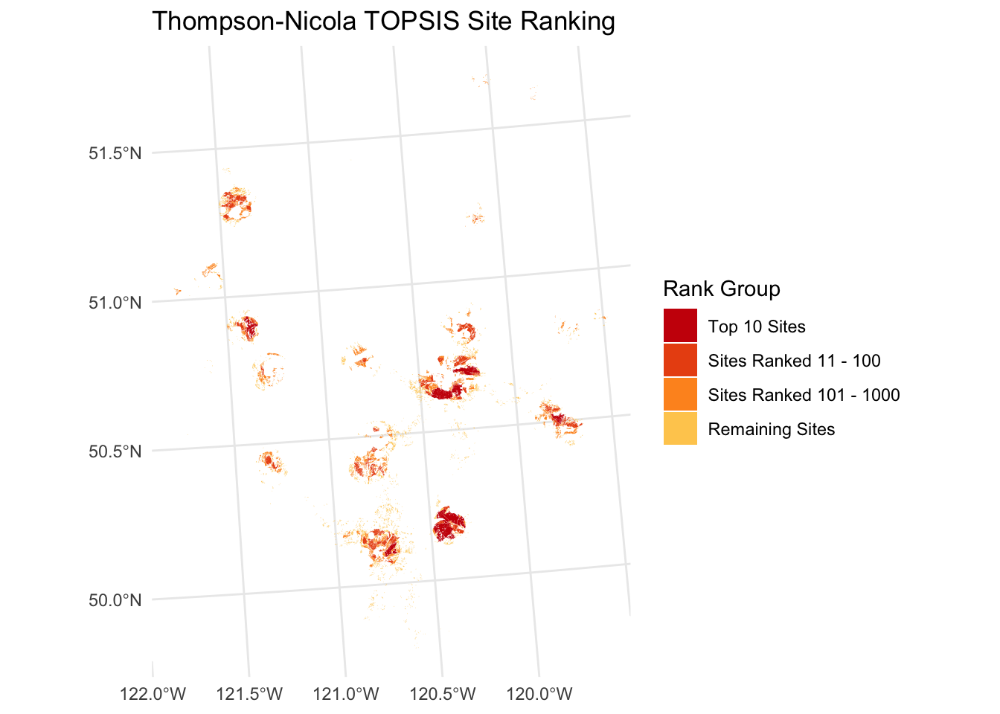